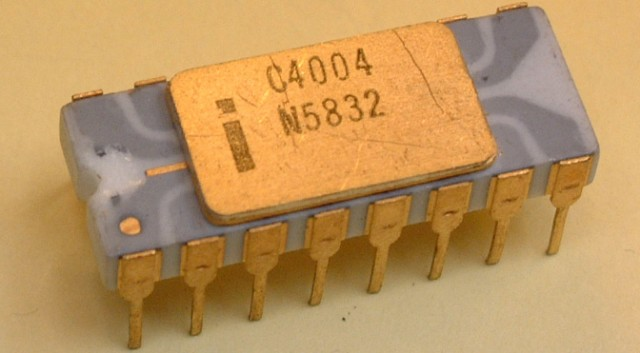

The age of E-Commerce
Us 21st century humans, have come up with an awful lot of entertaining ways, for filling up the few free moments, in our over-scheduled lives. We see and dance, we surf and ski, and watch TV. But, what diversion do we love most of all? We love to spend!
Now, some folks say our obsession with shopping reflexes certain decadance, certain self-indulgence. But I say everytime without a piece of plastic, and slapping down to buy some bling bling, we are taking part in a noble tradition, the evolution of capitalism.
But a new phase of capitalism is upon us. The age of E-Commerce, and age that had changed the way how the Business works. The way we buy and sell. An age assured in by a transformative technology, the world wide web and by two of its seminal companies, Amazon.com and Ebay. It's easy to forget just how revolutionary these companies were, when they first burst upon a scene, back in the 1990s. How they took the business, to its very core.
After reading a report about the future of the Internet that projected annual web commerce growth at 2,300%, Bezos created a list of 20 products that could be marketed online. He narrowed the list to what he felt were the five most promising products, which included: compact discs, computer hardware, computer software, videos, and books. Bezos finally decided that his new business would sell books online, because of the large worldwide demand for literature, the low unit price for books, and the huge number of titles available in print. Amazon was founded in the garage of Bezos' rented home in Bellevue, Washington. Bezos' parents invested almost $250,000 in the start-up.
The AuctionWeb was founded in California on September 3, 1995, by French-born Iranian-American computer programmer Pierre Omidyar as part of a larger personal site. One of the first items sold on AuctionWeb was a broken laser pointer for $14.83. Astonished, Omidyar contacted the winning bidder to ask if he understood that the laser pointer was broken; the buyer explained: "I'm a collector of broken laser pointers. It soon became the first online auction site allowing person-to-person transactions, and its popularity boomed.
Reportedly, eBay was simply a hobby for Omidyar until his Internet service provider informed him he would need to upgrade to a business account due to his high website traffic. The monthly price increase from $30 to $250 prompted him to start charging eBay users , who did not object. Chris Agarpao was eBay's first additional employee to process mailed check payments.

The first microprocessor sold by Intel was the four-bit 4004 in 1971. The 4004 was mostly used inside of calculators and similar devices. The 4004 was followed by a similar processor known as the 4040, which was essentially an improved variation of the 4004 with an extended instruction set and higher performance.
Moore's Law refers to Moore's perception that the number of transistors on a microchip doubles every two years, though the cost of computers is halved. Moore's Law states that we can expect the speed and capability of our computers to increase every couple of years, and we will pay less for them.
The Pentium emerged in 1993 as the first Intel x86 processor that didn't follow the 80x86 number system. Internally, the Pentium used the P5 architecture, which was Intel's first x86 superscalar design. Although the Pentium was generally faster than the 80486 in every way, its most prominent feature was a substantially improved FPU. The original Pentium's FPU was more than ten times faster than the 80486's aging unit. This became an even more significant feature in later years when Intel released the Pentium MMX. This processor was architecturally the same as the original Pentium, but featured support for Intel's new MMX SIMD instruction set that could drastically boost performance.
The year 1995 was the inaugural year of the 21st century, a clear starting point for contemporary life. It was, proclaimed an exuberant newspaper columnist at the time, "the year the Web started changing lives."
It was the year when the Internet and the World Wide Web moved from the obscure realm of technophiles and academic researchers to become a household word, the year when the Web went from vague and distant curiosity to a phenomenon that would change the way people work, shop, learn, communicate, and interact.
Fiber optic lines have taken over and transformed the long distance telephone industry. Optical fibers are also a huge part of making the Internet available around the world. When fiber replaces copper for long distance calls and Internet traffic, it dramatically lowers costs.
The dot.com bubble (also known as the dot.com boom, the tech bubble, and the Internet bubble) was a stock market bubble caused by excessive speculation of Internet-related companies in the late 1990s, a period of massive growth in the use and adoption of the Internet.
Between 1995 and its peak in March 2000, the Nasdaq Composite stock market index rose 400%, only to fall 78% from its peak by October 2002, giving up all its gains during the bubble. During the crash, many online shopping companies, such as Pets.com, Webvan, and Boo.com, as well as several communication companies, such as Worldcom, NorthPoint Communications, and Global Crossing, failed and shut down. Some companies, such as Cisco, whose stock declined by 86%, Amazon.com, and Qualcomm, lost a large portion of their market capitalization but survived.
An unprecedented amount of personal investing occurred during the boom and stories of people quitting their jobs to trade on the financial market were common. The news media took advantage of the public's desire to invest in the stock market; an article in The Wall Street Journal suggested that investors "re-think" the "quaint idea" of profits, and CNBC reported on the stock market with the same level of suspense as many networks provided to the broadcasting of sports events.
At the height of the boom, it was possible for a promising dot-com company to become a public company via an IPO and raise a substantial amount of money even if it had never made a profit—or, in some cases, realized any material revenue. People who received employee stock options became instant paper millionaires when their companies executed IPOs; however, most employees were barred from selling shares immediately due to lock-up periods. The most successful entrepreneurs, such as Mark Cuban, sold their shares or entered into hedges to protect their gains.
Most dot-com companies incurred net operating losses as they spent heavily on advertising and promotions to harness network effects to build market share or mind share as fast as possible, using the mottos "get big fast" and "get large or get lost". These companies offered their services or products for free or at a discount with the expectation that they could build enough brand awareness to charge profitable rates for their services in the future.
The "growth over profits" mentality and the aura of "new economy" invincibility led some companies to engage in lavish spending on elaborate business facilities and luxury vacations for employees. Upon the launch of a new product or website, a company would organize an expensive event called a dot com party.
What amazon and eBay did was fundamentally different, they did it early, aggressively and extremely well, that recognizing the customer experience was paramount. Showing deep understanding and relentless focus on their customers. We can say Amazon and eBay are the Ford and GM of the Web economy.